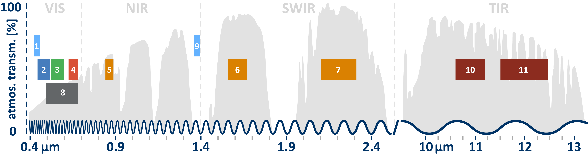

What You'll Learn
- Load a Landsat satellite image into Earth Engine
- Understand what image bands represent and how they store data
- Visualize individual bands as grayscale images
- Create true-color (natural) RGB composites
- Create false-color composites to highlight features invisible to the human eye
- Use the Inspector tool to examine pixel values
Building On Previous Learning
This lab builds on Lab 1 where you learned to use
print() and navigate the Code Editor. Now you'll add Map.addLayer() to
visualize data on the map.
Why This Matters
Landsat has been continuously observing Earth since 1972—providing the longest continuous record of Earth's surface from space. Scientists use this archive to:
- Detect changes in land cover over 50+ years
- Monitor agricultural productivity and drought conditions
- Track glacier retreat and sea level rise indicators
- Study urbanization patterns across decades
Understanding how to visualize and interpret satellite bands is the foundation of all remote sensing analysis.
Before You Start
- Prerequisites: Finish Lab 1 and review the module introduction to the Landsat archive so you recognize the scene metadata referenced below.
- Estimated time: 45 minutes
- Materials: Google Earth Engine login, browser with console access.
Key Terms
- Band
- A single layer of data in a satellite image representing measurements in a specific portion of the electromagnetic spectrum (e.g., red light, near-infrared).
- Pixel
- The smallest unit of a raster image. Each pixel stores a value (Digital Number) representing the measured intensity.
- Digital Number (DN)
- The numeric value stored in each pixel, representing the amount of electromagnetic radiation detected by the sensor.
- RGB Composite
- A color image created by assigning three bands to the Red, Green, and Blue color channels of your display.
- True-Color Composite
- An RGB composite where red, green, and blue bands are assigned to their natural display colors (looks like a photograph).
- False-Color Composite
- An RGB composite where bands are assigned to colors they don't naturally represent, often to highlight specific features.
Introduction
Satellite images are at the heart of Google Earth Engine's power. This lab teaches you how to inspect and visualize data stored in image bands. We first visualize individual bands as separate map layers and then explore a method to visualize three different bands in a single composite layer. We compare different kinds of composites for satellite bands that measure electromagnetic radiation in the visible and non-visible spectrum.

Lab Instructions
-
Part 1 - Accessing an Image
To begin, open the Code Editor and create a new script. We'll load a single Landsat 5 image using its unique ID:
var first_image = ee.Image('LANDSAT/LT05/C02/T1_L2/LT05_118038_20000606');Understanding the code:
var first_image- Creates a variable to store our imageee.Image()- Earth Engine function to load a single image- The long string is the image's unique identifier (like a file path)
Click Run. Nothing visible happens yet—the image is loaded into memory, waiting to be used.
Print the image to see its metadata (information about the image):
print(first_image);Expand the output in the Console. You'll see this image has 19 different bands. The first six bands (SR_B1 through SR_B7) represent different portions of the electromagnetic spectrum:
- SR_B1 - Blue light
- SR_B2 - Green light
- SR_B3 - Red light
- SR_B4, SR_B5, SR_B7 - Infrared (invisible to humans)

Image metadata displayed in the Console -
Part 2 - Visualizing Single Bands
Now let's add a band to the map. We use
Map.addLayer():Map.addLayer(first_image); Map.setCenter(122, 32, 7);The image might look dark or washed out. That's because we haven't told Earth Engine how to display the values. Let's add visualization parameters:
Map.addLayer( first_image, { bands: ['SR_B1'], min: 8000, max: 17000 }, 'Band 1 (Blue)' );Understanding visualization parameters:
bands- Which band(s) to displaymin- Pixel values below this appear blackmax- Pixel values above this appear white'Band 1 (Blue)'- The layer name in the Layers panel
Now add all three visible bands as separate layers:
Map.addLayer( first_image, {bands: ['SR_B1'], min: 8000, max: 17000}, 'Band 1 (Blue)' ); Map.addLayer( first_image, {bands: ['SR_B2'], min: 8000, max: 17000}, 'Band 2 (Green)' ); Map.addLayer( first_image, {bands: ['SR_B3'], min: 8000, max: 17000}, 'Band 3 (Red)' );Try It
Use the Inspector tool (right panel) to click on different areas of the map. Compare the band values between water, vegetation, and urban areas. Which band shows the most contrast between land and water?
-
Part 3 - True-Color Composites
Instead of viewing bands separately, we can combine three bands into a single RGB composite. By assigning:
- Red band → Red display channel
- Green band → Green display channel
- Blue band → Blue display channel
We create an image that looks like a natural photograph:
Map.addLayer( first_image, { bands: ['SR_B3', 'SR_B2', 'SR_B1'], min: 8000, max: 17000 }, 'True Color (Natural)');
True-color composite looks like a natural photograph Note: The order of bands matters! Earth Engine assigns bands to RGB channels in the order you list them: [Red, Green, Blue]. For Landsat 5, B3=Red, B2=Green, B1=Blue.
-
Part 4 - False-Color Composites
Here's where remote sensing gets powerful. We can assign any band to any color channel—including bands our eyes can't see! The color-infrared composite puts the near-infrared band (B4) in the red channel:
Map.addLayer( first_image, { bands: ['SR_B4', 'SR_B3', 'SR_B2'], min: 8000, max: 17000 }, 'False Color (Color Infrared)');
Color-infrared composite: vegetation appears bright red Why does vegetation appear red?
Healthy plants strongly reflect near-infrared light (for temperature regulation). Since we've assigned NIR to the red display channel, areas with healthy vegetation glow bright red. This makes it much easier to identify vegetation than in true-color images!
Try It
Toggle between the True Color and False Color layers using the Layers panel. Can you identify agricultural fields that were hard to see in true color?
Check Your Understanding
- What does "SR_B4" represent in a Landsat 5 image?
- Why do we need to specify
minandmaxvalues when visualizing? - In a false-color composite, why does vegetation appear red?
- If you wanted water to appear blue in a composite, which band should you assign to the blue channel?
Hint: Think about what wavelengths different surfaces reflect strongly.
Troubleshooting
Solution: Your min/max values are wrong. Try adjusting them. Use the Inspector to click on the image and see actual pixel values, then set min/max accordingly.
Solution: The image might be outside your current view. Use
Map.centerObject(first_image, 8); to center the map on the image.
Solution: Band names are case-sensitive. Make sure you use exactly
'SR_B1' with correct capitalization.
Key Takeaways
ee.Image()loads a single image by its catalog IDMap.addLayer()displays data on the map with visualization parameters- Satellite images contain multiple bands, each measuring different wavelengths
- True-color composites (R-G-B bands) look like photos
- False-color composites can reveal features invisible to our eyes
- Healthy vegetation strongly reflects near-infrared light
Common Mistakes to Avoid
- Wrong band order: Remember, bands are assigned [Red, Green, Blue] in that order
- Forgetting visualization parameters: Without min/max, images often look wrong
- Case sensitivity:
'SR_B1'is different from'sr_b1' - Confusing band numbers: Landsat 5/7 and Landsat 8/9 have different band numbering!
Pro Tips
- Use layer transparency (slider in Layers panel) to compare composites
- Click the gear icon next to a layer to adjust visualization on-the-fly
- The format
['B4', 'B3', 'B2']is called a "band combination" or "band recipe" - Try the "4-5-3" combination for Landsat 5 to highlight different land covers
📋 Lab Submission
Save your work and submit the URL of your Code.
Subject: Lab 2 - Hello Landsat - [Your Name]
Include in your email:
- The shareable link to your GEE script
- Screenshot of your true-color composite
- Screenshot of your false-color composite
- Your answer to: Which bands are blue, green, and red in Landsat 5?